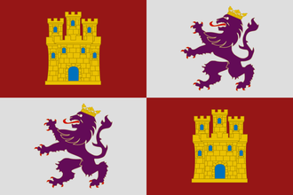
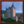
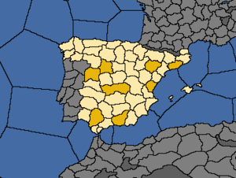

{kind=link}
{kind=link}
| 伊比利亚 |
| 法兰西 |
| 低地 |
| 不列颠 |
| 北欧及波罗的 |
| 中欧 |
| 北德意志 |
| 南德意志 |
| 意大利 |
| 巴尔干及安纳托利亚 |
| 东欧 |
 | |
|---|---|
| 卡斯蒂利亚 | |
| 政府等级 | |
| 主流文化 | |
| 首都 | |
| 政体 |  封建贵族制 |
| 国教 | |
| 科技组 | 西欧科技组 |
| 卡斯蒂利亚的理念 |
此信息可能已落后版本，最后更新于1.35 ----
|
| +15% 陆军士气 +25% 海军陆战队规模上限 |
| +25 全局移民增长
|
|
|
卡斯蒂利亚（英文：Castile，卡斯提尔；西班牙文：Castilla）王国是1444年时伊比利亚半岛上最大且最有影响力的国家，该国直接接壤于  葡萄牙、
葡萄牙、 阿拉贡、
阿拉贡、 纳瓦拉、
纳瓦拉、 格拉纳达、
格拉纳达、 英格兰五国，并与
英格兰五国，并与  摩洛哥、
摩洛哥、 特莱姆森、
特莱姆森、 法兰西等国间接接壤，是官方推荐的新手起始国家之一。
法兰西等国间接接壤，是官方推荐的新手起始国家之一。
历史上，卡斯蒂利亚与邻国阿拉贡建立了联合统治，随后得以成立  西班牙，并于加勒比、墨西哥和南美地区建立了庞大的殖民帝国。而游戏中卡斯蒂利亚绝佳的地理位置，使该国的一举一动都能同时影响欧洲乃至于世界各地的局势。
西班牙，并于加勒比、墨西哥和南美地区建立了庞大的殖民帝国。而游戏中卡斯蒂利亚绝佳的地理位置，使该国的一举一动都能同时影响欧洲乃至于世界各地的局势。
当DLC 霸业启用时，卡斯蒂利亚使用新版的霸业任务，与西班牙共用。
霸业启用时，卡斯蒂利亚使用新版的霸业任务，与西班牙共用。
当DLC 霸业未启用而DLC
霸业未启用而DLC 黄金世纪启用时，卡斯蒂利亚将使用黄金世纪任务。
黄金世纪启用时，卡斯蒂利亚将使用黄金世纪任务。
当两个DLC均未开启时，卡斯蒂利亚使用老式的基础任务。
卡斯蒂利亚拥有丰富的动态历史事件，其中绝大多数与西班牙共用。
在1450至1530年中，如果卡斯蒂利亚与  阿拉贡都不为附庸国，且双方君主互为异性，或者其中一方处于摄政会议统治的情况下时，事件的发生几率会变得很高。事件发生之后阿拉贡会被卡斯蒂利亚联合统治，并 -50%
阿拉贡都不为附庸国，且双方君主互为异性，或者其中一方处于摄政会议统治的情况下时，事件的发生几率会变得很高。事件发生之后阿拉贡会被卡斯蒂利亚联合统治，并 -50%  独立倾向。
独立倾向。
在阿拉贡由AI控制的情况下，只可能发生卡斯蒂利亚为主导的伊比利亚联婚。
卡斯蒂利亚在开局数十年内可以触发两个内战  灾难。阿拉贡王嗣灾难在开局不久后就将触发，必须选择支持当前国王，或是支持阿拉贡王嗣一派。在卡斯蒂利亚内战中，必须选择是支持
灾难。阿拉贡王嗣灾难在开局不久后就将触发，必须选择支持当前国王，或是支持阿拉贡王嗣一派。在卡斯蒂利亚内战中，必须选择是支持  阿拉贡方或
阿拉贡方或  葡萄牙方之一。
葡萄牙方之一。
|
|
这条信息可能已不适合当前版本，最后更新于1.35。 |
虽然不是王储，但人们都认同年轻公主伊莎贝拉的才华和美德。作为强大的特拉斯塔玛拉家族的女儿，她还通过联姻获得了强大的盟友以支持她宣称王位。没人能预测王国的未来，但即使是那些不满于[Root.Monarch.GetName]统治的人，也承认伊莎贝拉作为[Root.Monarch.GetHerHis]继承人的权利。
| 触发条件 | 平均发生时间
200 月 |
王位应该是她的。
她的政治力量可以被用在其他地方。
| |
|
|
这条信息可能已不适合当前版本，最后更新于1.35。 |
作为欧洲历史上第一个女性外交官，阿拉贡的凯瑟琳在英国为西班牙宫廷服务。当英格兰人以为她可以轻易地被操控时，凯瑟琳证明了他们是错的。她与亨利八世结婚，并在她做英格兰摄政的六个月中在弗洛登战役中扮演了重要的角色。凯瑟琳作为一个受过良好教育的女子，委托了胡安·路易斯·比韦斯写下了《基督教女性的教育》一书，同时也因她对穷苦人民的慈善而倍受爱戴。她是文艺复兴中人文主义的坚定拥护者，也是伟大学者鹿特丹的伊拉斯谟和托马斯·摩尔的朋友。因为她没有产下男孩且仅有一名女孩玛丽活过了婴儿期，亨利八世尝试想要废除他们的婚姻——这也是英格兰教会与罗马教廷决裂的导火索。如果允许她留在我们的宫廷，那么这位充满智慧的女子就可以带来许多的好处。
卡斯蒂利亚唯一的非通用决议就是成立  西班牙。它既可以在征服阿拉贡与
西班牙。它既可以在征服阿拉贡与  格拉纳达之后武力成立西班牙，也可以通过外交手段达成目标，比如说触发“伊比利亚大婚”事件之后联合统治阿拉贡或附庸阿拉贡，成立西班牙的决议让玩家可以一键吞并阿拉贡。
格拉纳达之后武力成立西班牙，也可以通过外交手段达成目标，比如说触发“伊比利亚大婚”事件之后联合统治阿拉贡或附庸阿拉贡，成立西班牙的决议让玩家可以一键吞并阿拉贡。
|
|
这条信息可能已不适合当前版本，最后更新于1.35。 |
在新大陆的全面扩张以及殖民地的大量建立使得西班牙成为了当时最强大也最富有的国家之一。西班牙的探险者们不懈地探索着未知的地域，扩展着我们的疆界。无数的黄金白银被运回祖国，填满了国库。
潜在需求
|
接受 |
效果
| |
AI决议因子：

|
|
这条信息可能已不适合当前版本，最后更新于1.35。 |
在新大陆的全面扩张以及殖民地的大量建立使得西班牙成为了当时最强大也最富有的国家之一。西班牙的探险者们不懈地探索着未知的地域，扩展着我们的疆界。无数的黄金白银被运回祖国，填满了国库。
潜在需求
|
接受 |
| 效果 | |
AI决议因子：
1444年，卡斯蒂利亚在地中海西端处于优势地位。准备在新大陆的殖民与贸易中大显身手一番，亦或者在旧大陆上施展政治手腕。卡斯蒂利亚可以作为萌新了解游戏相关机制的首选国家之一，例如殖民机制和贸易机制。这是因为一方面卡斯蒂利亚所处的地理位置，另一方面它几乎不会卷入欧洲的主要战争。而对于高玩来说，卡斯蒂利亚提供了一套强力的国家理念，使其可以在地中海地区，甚至全球建立霸权。本文主要是为萌新编写的，当然在最后也提供了一些更加专注于欧洲大陆的“高级”策略选项。
请注意，随着版本的多次更新，卡斯蒂利亚不同扩张方向的收益也在变化。在1.28版本中，任务树的修改提供了对意大利地区的永久宣称与对英格兰和奥地利的联统CB，使得卡斯蒂利亚在欧洲有了更大的发展机会。而在1.30版本中，殖民领与贸易公司的修改提高了卡斯蒂利亚向着新大陆与印非扩张的收益，同一版本中对贸易区划分的修改使得玩家不需要控制热那亚贸易区的省份就可以垄断塞维利亚贸易区，从而降低了向着法兰西与意大利方向扩张的必要性。
卡斯蒂利亚的地理位置以及独有的国家理念，令其在殖民方面有着与生俱来的优势。这也使  探索理念成了卡斯蒂利亚需要点亮的首选理念组。而在第一个理念组被点亮之前的这段时间里，卡斯蒂利亚在旧大陆上仍有一些事情可以搞。
探索理念成了卡斯蒂利亚需要点亮的首选理念组。而在第一个理念组被点亮之前的这段时间里，卡斯蒂利亚在旧大陆上仍有一些事情可以搞。
 纳瓦拉，卡斯蒂利亚北部只拥有一个省份的小国。对卡斯蒂利亚而言纳瓦拉是首选的附庸对象。如果卡斯蒂利亚不这么做，
纳瓦拉，卡斯蒂利亚北部只拥有一个省份的小国。对卡斯蒂利亚而言纳瓦拉是首选的附庸对象。如果卡斯蒂利亚不这么做， 法兰西或
法兰西或  阿拉贡也会附庸之——大多数情况下两者之一或两者皆是卡斯蒂利亚的宿敌。附庸纳瓦拉需要抢在法兰西之前将两国关系提升至 190 以上。在进行改善关系和影响纳瓦拉之外，还可以赠送礼物或者援助的手段，快速提高两国关系。纳瓦拉在附庸十年后很容易就能吞并掉，从而可以省出一个外交关系来。纳瓦拉也可以用来在对法作战时，分一部分省份给它，从而降低卡斯蒂利亚所承受的过度扩张。如果启用了
阿拉贡也会附庸之——大多数情况下两者之一或两者皆是卡斯蒂利亚的宿敌。附庸纳瓦拉需要抢在法兰西之前将两国关系提升至 190 以上。在进行改善关系和影响纳瓦拉之外，还可以赠送礼物或者援助的手段，快速提高两国关系。纳瓦拉在附庸十年后很容易就能吞并掉，从而可以省出一个外交关系来。纳瓦拉也可以用来在对法作战时，分一部分省份给它，从而降低卡斯蒂利亚所承受的过度扩张。如果启用了  黄金世纪，附庸纳瓦拉后，卡斯蒂利亚的任务树将为该省份添加一个免费的要塞。
黄金世纪，附庸纳瓦拉后，卡斯蒂利亚的任务树将为该省份添加一个免费的要塞。
 格拉纳达，伊比利亚半岛上最后的穆斯林国家，卡斯蒂利亚的早期任务“准备收复失地”（参见卡斯蒂利亚任务）将为玩家提供永久宣称去征服他，该任务要求陆军与海军的数量达到上限并拥有至少60%人力储备，最好开局就开始准备部队，考虑到前期紧缺的人力储备，也可以雇佣一支雇佣军。当卡斯蒂利亚与格拉纳达的停战期结束时，后者常常已经和
格拉纳达，伊比利亚半岛上最后的穆斯林国家，卡斯蒂利亚的早期任务“准备收复失地”（参见卡斯蒂利亚任务）将为玩家提供永久宣称去征服他，该任务要求陆军与海军的数量达到上限并拥有至少60%人力储备，最好开局就开始准备部队，考虑到前期紧缺的人力储备，也可以雇佣一支雇佣军。当卡斯蒂利亚与格拉纳达的停战期结束时，后者常常已经和  突尼斯或者
突尼斯或者  摩洛哥达成了盟约，但这场仗还是比较容易的。如果这时的格拉纳达真的有盟友，则可以借此机会夺取一些额外的北非土地，以便于去完成任务“继续收复失地”。完成夺回安达卢西亚任务将触发“格拉纳达王国的命运”事件，建议选择以降低稳定度为代价转换安达卢西亚地区信仰为
摩洛哥达成了盟约，但这场仗还是比较容易的。如果这时的格拉纳达真的有盟友，则可以借此机会夺取一些额外的北非土地，以便于去完成任务“继续收复失地”。完成夺回安达卢西亚任务将触发“格拉纳达王国的命运”事件，建议选择以降低稳定度为代价转换安达卢西亚地区信仰为 天主教的选项，这不仅有利于完成任务和提高国家的宗教统一，而且可以避免一个恶性的后续事件——当安达卢西亚被手动传教时，当地将爆发叛乱并降低卡斯蒂利亚的2点稳定。
天主教的选项，这不仅有利于完成任务和提高国家的宗教统一，而且可以避免一个恶性的后续事件——当安达卢西亚被手动传教时，当地将爆发叛乱并降低卡斯蒂利亚的2点稳定。
 阿拉贡有概率会宿敌卡斯蒂利亚，作为一个较强的国家，阿拉贡对卡斯蒂利亚来说是一个威胁。但是，伊比利亚大婚这一事件将可以使玩家玩家直接建立对阿拉贡的亚联合统治，在1450年到1530年之间，只要两国的统治者性别不同（其中一方可以是王后摄政），这一事件就有概率发生。因此，当这个事件还有可能触发时，应避免与阿拉贡发生战争，通过事件完成联统，并最终将其整合进卡斯蒂利亚，总要比武力征服要方便，也能省下不少
阿拉贡有概率会宿敌卡斯蒂利亚，作为一个较强的国家，阿拉贡对卡斯蒂利亚来说是一个威胁。但是，伊比利亚大婚这一事件将可以使玩家玩家直接建立对阿拉贡的亚联合统治，在1450年到1530年之间，只要两国的统治者性别不同（其中一方可以是王后摄政），这一事件就有概率发生。因此，当这个事件还有可能触发时，应避免与阿拉贡发生战争，通过事件完成联统，并最终将其整合进卡斯蒂利亚，总要比武力征服要方便，也能省下不少 行政点数。如果战争无法避免，在和谈时可以不选择割让领土而选择其他方式的战争赔偿。但是，如果时间来到1530以后，这也就意味着伊比利亚大婚这一事件不会发生了，那么也就没有理由不去武力征服阿拉贡了。
行政点数。如果战争无法避免，在和谈时可以不选择割让领土而选择其他方式的战争赔偿。但是，如果时间来到1530以后，这也就意味着伊比利亚大婚这一事件不会发生了，那么也就没有理由不去武力征服阿拉贡了。
 葡萄牙是卡斯蒂利亚的历史友邦，双方拥有互相+25的关系修正并更容易结盟，当一方成为附庸时也会拥有额外的-50%独立倾向。葡萄牙常常开局就向玩家发送来结盟申请，但不建议接受，因为只要卡斯蒂利亚通过伊比利亚大婚事件联合统治了阿拉贡，就可以从任务树获取对葡萄牙的重建联合统治的战争理由，使其成为自己的属国。然而，被联统国无法向宗主转移贸易竞争力，这使得作为被联统国的葡萄牙往往会在塞维利亚节点分走卡斯蒂利亚30%甚至50%的贸易份额，从而极大地削弱玩家的收入。因此，部分玩家会选择开局伪造葡萄牙的宣称并割走其一半的省份（此时的
葡萄牙是卡斯蒂利亚的历史友邦，双方拥有互相+25的关系修正并更容易结盟，当一方成为附庸时也会拥有额外的-50%独立倾向。葡萄牙常常开局就向玩家发送来结盟申请，但不建议接受，因为只要卡斯蒂利亚通过伊比利亚大婚事件联合统治了阿拉贡，就可以从任务树获取对葡萄牙的重建联合统治的战争理由，使其成为自己的属国。然而，被联统国无法向宗主转移贸易竞争力，这使得作为被联统国的葡萄牙往往会在塞维利亚节点分走卡斯蒂利亚30%甚至50%的贸易份额，从而极大地削弱玩家的收入。因此，部分玩家会选择开局伪造葡萄牙的宣称并割走其一半的省份（此时的 英格兰往往因百年战争和玫瑰战争背弃与葡萄牙的盟约），并在下一场战争中将葡萄牙收为自己的附庸国。请注意，如果玩家与葡萄牙开战，将有可能触发事件“增长的敌意”使双方失去历史友邦的修正，避免与葡萄牙的军队交战而仅通过围城获取战争分数可以降低这一事件出现的概率。另外，被联统国和附庸国都不会选取探索理念组，所以请在葡萄牙开启了第一个理念组之后（不需要点完）再将其收服。
英格兰往往因百年战争和玫瑰战争背弃与葡萄牙的盟约），并在下一场战争中将葡萄牙收为自己的附庸国。请注意，如果玩家与葡萄牙开战，将有可能触发事件“增长的敌意”使双方失去历史友邦的修正，避免与葡萄牙的军队交战而仅通过围城获取战争分数可以降低这一事件出现的概率。另外，被联统国和附庸国都不会选取探索理念组，所以请在葡萄牙开启了第一个理念组之后（不需要点完）再将其收服。
另外，如果带葡萄牙打收复失地战争，葡萄牙可能会标红并自己占领格拉纳达；如果不带，葡萄牙可能会在停战到期后自己单吃之；如果想尽早完成收复休达的任务而不想与葡萄牙断盟，可以带葡萄牙打格拉纳达带摩洛哥，但不往非洲出兵；等摩洛哥打下休达后，投降并将葡萄牙的休达割予摩洛哥，然后自己全吃格拉纳达即可。
 摩洛哥、
摩洛哥、 费赞、
费赞、 突尼斯被称为北非三兄弟，他们拥有允许劫掠海岸的国家理念，所以会经常劫掠伊比利亚的沿岸省份影响玩家的经济，从长远来看是必须解决的目标，作为远离欧陆的异教徒，征服这些省份也不太会带来侵略扩张的恶名。但卡斯蒂利亚开局的君主和继承人属性都很差，所以为了尽快提升行政科技以解锁第一个理念组，不太建议花费过多
突尼斯被称为北非三兄弟，他们拥有允许劫掠海岸的国家理念，所以会经常劫掠伊比利亚的沿岸省份影响玩家的经济，从长远来看是必须解决的目标，作为远离欧陆的异教徒，征服这些省份也不太会带来侵略扩张的恶名。但卡斯蒂利亚开局的君主和继承人属性都很差，所以为了尽快提升行政科技以解锁第一个理念组，不太建议花费过多 行政点数在造核上，所以在开局时大口吞并这三个北非国家的省份可能并不值当。在割取省份时，应优先割取其沿海省份，只要没有了港口，这些国家自然也就无法再进行海盗行为。另外，由于劫掠海岸的互动无法对盟国使用，结盟其中的一个国家并帮助其扩张也是可以考虑的。由于新征服的北非省份都属于穆斯林宗教组，在没有足够传教能力的前期，可以将这些省份分配给贸易公司来避免异教异文化的惩罚。
行政点数在造核上，所以在开局时大口吞并这三个北非国家的省份可能并不值当。在割取省份时，应优先割取其沿海省份，只要没有了港口，这些国家自然也就无法再进行海盗行为。另外，由于劫掠海岸的互动无法对盟国使用，结盟其中的一个国家并帮助其扩张也是可以考虑的。由于新征服的北非省份都属于穆斯林宗教组，在没有足够传教能力的前期，可以将这些省份分配给贸易公司来避免异教异文化的惩罚。
只要点亮了  探索理念，卡斯蒂利亚就可以开始向新大陆的扩张了。如果需要的话，还可以经撒哈拉以南非洲，绕过开普，向亚洲扩张。海岛博哈多尔角是卡斯蒂利亚任务所需要的省份，需要优先殖民，除此之外，非洲西部的阿尔金是一个重要的前哨站，可以减慢其他国家向着非洲与加勒比海殖民的步伐，但如果除了玩家和
探索理念，卡斯蒂利亚就可以开始向新大陆的扩张了。如果需要的话，还可以经撒哈拉以南非洲，绕过开普，向亚洲扩张。海岛博哈多尔角是卡斯蒂利亚任务所需要的省份，需要优先殖民，除此之外，非洲西部的阿尔金是一个重要的前哨站，可以减慢其他国家向着非洲与加勒比海殖民的步伐，但如果除了玩家和 葡萄牙之外没有其他国家选取探索理念组，倒也不必急于将其殖民。
葡萄牙之外没有其他国家选取探索理念组，倒也不必急于将其殖民。
玩家可以通过“殖民地与贸易地区”地图模式来查看各个省份位于哪个殖民地，考虑到任务树的要求与贸易路线的流向，加勒比殖民地的两座大岛应当是玩家的首要殖民目标。在这之后，墨西哥殖民地与秘鲁殖民地拥有大量生产金矿的省份，并且这两个地区的大量土著也有利于玩家迅速扩张自己的殖民领，因此也是重要的殖民地。玩家可以通过“贸易地图”模式来查看贸易路线的流向，并优先殖民位于塞维利亚贸易区上游的殖民地，对于新大陆而言，北美东岸的殖民地应当是玩家最后考虑的目标。
当玩家在某个殖民地地区拥有5个核心省份后，就会在当地成立一个殖民领，对于天主教国家，托尔德西里亚斯条约将降低其他国家在此地区殖民的速度，并降低AI国家在此地区殖民的倾向，所以尽快殖民5个省份成立殖民领是抢占新大陆的关键。可以在殖民地出现后在省份界面召回殖民者并将其派往其他省份，从而实现超上限殖民，超上限殖民地的维护费将指数增长，但如果玩家经济比较富裕，超一两块殖民地通常还是可以接受的。
可以通过省份界面查看该省份的各项修正，玩家应注意那些会影响殖民速度的修正，举例而言，拉普拉提殖民地的南部地区具有“干旱”修正，殖民起来要比北部地区更慢。在选择殖民目标时，具有河口和贸易中心的省份具有更高的殖民价值，但沿着相邻省份殖民可以略微提高殖民的速度，其中利弊玩家需要自己取舍。
通过对土著发动战争割取省份，玩家可以迅速扩张自己的殖民领，然而这也会给殖民领带来严重的叛乱风险，请留一支部队在当地帮助殖民领平叛。另外，当殖民领成立时会获得宗主在对应地区的核心，包括那些正在核心化但尚未完成的省份，利用这一机制，玩家可以先在某个地区吞并大量省份但不制造核心，然后一口气将所有省份造核，待到前5个省份造核完成时，殖民领就会成立，同时获得所有正在造核省份的核心，使玩家获得一个体量较大且没有叛乱的殖民领。
当殖民领的省份数量超过10个后，就会为玩家提供一个额外的商人团，还会根据殖民领类型为玩家提供各类加成，然而新成立的殖民领收入很低，负担不起每月2块的殖民地维护费，玩家可以通过外交界面的经济行动中向殖民领（和葡萄牙）提供战争援助，增加殖民领的扩张速度。
作为一个殖民帝国，贸易收入是玩家收入的主要来源，玩家可以将获得的商人团派往自己拥有较高贸易竞争力且有多个下游的贸易区，将贸易额导向卡斯蒂利亚的贸易本埠，即塞维利亚贸易区。在拥有DLC  黄金国后，拥有金矿省份且位于宗主国贸易路线上游的殖民地，会通过珍宝船队将这些金矿的收入提供给宗主国，由于卡斯蒂亚的海军学说、伟大工程、探索理念组等等都可以为珍宝船队的收入提供加成，所以珍宝船队也将成为玩家的重要财政来源。
黄金国后，拥有金矿省份且位于宗主国贸易路线上游的殖民地，会通过珍宝船队将这些金矿的收入提供给宗主国，由于卡斯蒂亚的海军学说、伟大工程、探索理念组等等都可以为珍宝船队的收入提供加成，所以珍宝船队也将成为玩家的重要财政来源。
月份更替时，如果部队位于运输船上，就会受到相当高的海运损耗，玩家应尽量避免频繁地在欧陆、美洲、非洲之间跨洋运输部队。一支舰队的移动速度取决于舰队中速度最慢的船只，所以最好将运输船单独编队而非将其与战斗船只混编，为了避免运输船队被敌军偷袭，兵力的运输应当在开战前完成。除此之外，使用海军陆战队而非普通步兵也能降低海运造成的损耗。
如果选择专注于旧大陆，玩家可以沿非洲海岸线一路殖民至开普，再北上控制非洲东部海岸，最终抵达富庶的印度与东南亚，进而殖民澳大利亚或是夺取东亚。不同于新大陆，这一路线上的省份通常有着更高的发展度，但也有着更加难缠的敌人。跨海运输的时间与人力消耗非常大，不建议在游戏前期同时向着新旧大陆扩张。
象牙海岸贸易区是玩家庞大帝国的起点，也是旧大陆贸易路线的核心，一切来自亚洲的贸易额都将经由此流向玩家控制的塞维利亚，或是流向或许被玩家敌人控制的波尔多和英吉利海峡，彻底掌控象牙海岸的贸易是非常重要的，但并不一定意味着玩家需要将全部的殖民队投身于此，通过战争进攻其他染指象牙海岸的国家并割取省份也是一种可选的策略。每个在贸易区下游拥有省份的国家，会自动在上游获得一部分额外的贸易竞争力，因此在游戏中后期，就算象牙海岸没有其他国家，玩家在此的贸易竞争力也不可能达到100%，为了提高在此地的贸易竞争力，玩家可以将所有省份都加入贸易公司，并在河口和贸易中心修建相关建筑，减少贸易额的损失。
通过“贸易品”地图模式，玩家可以查看各个省份的产物，优先攻占那些生产金矿和高价值产物的省份。西非的 卓洛夫控制着不少生产金矿和象牙的省份，而且距离玩家很近，适合作为前期扩张的目标，非洲的另一片金矿产区位于东南部，开局时属于
卓洛夫控制着不少生产金矿和象牙的省份，而且距离玩家很近，适合作为前期扩张的目标，非洲的另一片金矿产区位于东南部，开局时属于 穆塔帕，但通常很快就会被
穆塔帕，但通常很快就会被 基尔瓦占据。非洲其余部分的产物大多不那么诱人，但可以割取沿海省份以提高贸易竞争力。
基尔瓦占据。非洲其余部分的产物大多不那么诱人，但可以割取沿海省份以提高贸易竞争力。
由于印度开局时的若干小国会很快互相兼并成数个庞然大物，所以越早抵达，征服难度越低。通过外交界面购买一个省份作为贸易公司，玩家就可以获得在印度的立足点，进而伪造对邻国的宣称，但如果买不到省份或是不愿付那么多钱，无理由强宣也值得考虑。如果敌军人多势众，最好先在印度结盟一个国家并索要军事通行权，避免开战后饱受海运折磨的陆军被敌人歼灭。科罗曼徳贸易区、徳干贸易区与孟加拉贸易区的贸易额可以被导向好望角，但若想收集印度西部的贸易额，必须先征服非洲东岸的桑给巴尔贸易区。
马六甲贸易区是东亚与东南亚贸易的重要节点，这里的国家通常比互相兼并后的印度诸国更加弱小，并且存在不少未殖民省份。在旧大陆建设殖民地时不会改变当地的宗教文化，但如果派遣军队实行“攻击原住民”指令消灭了所有的当地原住民，派遣殖民队即可将当地转化为玩家的主流信仰和主流文化，如果省份已经是一个殖民地，则需要召回殖民队后再重新派遣殖民队。这么做会使当地失去同化原住民带来的商品产出奖励，但同文化同宗教的省份会更不容易产生叛乱，其中利弊玩家可以自己权衡。
任何与首都不处于同一大陆的省份都可以加入贸易公司，相较于自治领地，加入贸易公司的省份会获得生产收入和贸易力量的加成，并且不会因异教或是异文化而受到惩罚，但也会占据更多的行政容量。可以在贸易地图模式中一键将某个贸易区的所有省份全部加入贸易公司，但除了象牙海岸贸易区以外，不建议这么做，因为在某个贸易区拥有贸易公司后，那些没有加入贸易公司的省份可以获得商品产出加成。提出而言，建议只将拥有河口与贸易中心的省份加入贸易公司，如果一个州没有任何省份是河口或贸易中心，也可以将这个州中价值最低的省份加入贸易公司，这样就可以在该州修建贸易公司建筑里的“中介交易所”来为全州提供加成。如果玩家的传教能力比较强，可以在添加贸易公司前先对当地进行传教，因为贸易公司省份虽然不会因为低异教容忍而受提高叛乱，但却会因为高正信容忍而降低叛乱。
 勃艮第的独有事件链使得任何与之联姻国家都有机会继承其领土，因此在游戏初期是一个很有诱惑力的盟友，也能作为对抗
勃艮第的独有事件链使得任何与之联姻国家都有机会继承其领土，因此在游戏初期是一个很有诱惑力的盟友，也能作为对抗 法兰西和
法兰西和 英格兰的强援，但其自身的外交环境比较恶劣，经常被多个大国宿敌，可能会影响玩家结交其他盟友。
英格兰的强援，但其自身的外交环境比较恶劣，经常被多个大国宿敌，可能会影响玩家结交其他盟友。
如果条件合适，同时又拥有较好的联盟关系。那么，尽早进攻 法兰西将会是一个不错的选择。这样一来，就可以限制法国的发展，使其不再是卡斯蒂利亚北方的一大威胁。在盟友选择方面，
法兰西将会是一个不错的选择。这样一来，就可以限制法国的发展，使其不再是卡斯蒂利亚北方的一大威胁。在盟友选择方面， 英格兰将是一个不错的选择，再加上
英格兰将是一个不错的选择，再加上  勃艮第或者
勃艮第或者  奥地利。由于法兰西十分难缠，这里不推荐萌新直接与之正面冲突。又或者，
奥地利。由于法兰西十分难缠，这里不推荐萌新直接与之正面冲突。又或者， 法兰西 可以成为优秀盟友去对抗
法兰西 可以成为优秀盟友去对抗  英格兰、
英格兰、 勃艮第、
勃艮第、 阿拉贡和
阿拉贡和  奥地利，其中一些或者全部在游戏中的某些时间点倾向于宿敌卡斯蒂利亚和法兰西双方。如果那一大坨蓝在你这边，完成 意大利雄心和意大利的征服任务 就能更容易得多。
奥地利，其中一些或者全部在游戏中的某些时间点倾向于宿敌卡斯蒂利亚和法兰西双方。如果那一大坨蓝在你这边，完成 意大利雄心和意大利的征服任务 就能更容易得多。
如果没有被法兰西设为宿敌而被英格兰宿敌，为了保证北方边境安定应联合法兰西，那么应当快速制造 英格兰所占法兰西领土：拉布尔（173）的宣称，并开始建造大船，等到割让曼恩事件发生以后再对英国宣战。由于运输船不够，可以将10队军队放在山脉地形的（247）坎布里亚，等到其余军队登陆以后在进行攻击，攻克诺森伯兰（246）。战后只需割让
英格兰所占法兰西领土：拉布尔（173）的宣称，并开始建造大船，等到割让曼恩事件发生以后再对英国宣战。由于运输船不够，可以将10队军队放在山脉地形的（247）坎布里亚，等到其余军队登陆以后在进行攻击，攻克诺森伯兰（246）。战后只需割让 英格兰本岛上的要塞，但应尽量索取大量赔款及加莱。再对勃艮第进行战争时sl以获得勃艮第的遗产，进入低地以及北德意志。同时得到诺森伯兰要塞以后可以进攻苏格兰，以夺取设德兰群岛的战争理由转进北欧。从此开启北欧-北非-北德意志三大扩张方向。与法兰西的断盟可以到专制主义时代再加以考虑，当然如果运气够好也可与法兰西建立联合统治。
英格兰本岛上的要塞，但应尽量索取大量赔款及加莱。再对勃艮第进行战争时sl以获得勃艮第的遗产，进入低地以及北德意志。同时得到诺森伯兰要塞以后可以进攻苏格兰，以夺取设德兰群岛的战争理由转进北欧。从此开启北欧-北非-北德意志三大扩张方向。与法兰西的断盟可以到专制主义时代再加以考虑，当然如果运气够好也可与法兰西建立联合统治。
卡斯蒂利亚的任务树给予了对英格兰和奥地利的重建联合统治CB，其中对英格兰（或大不列颠）的CB需要对方与自己信奉不同的宗教。除此之外，如果卡斯蒂利亚和奥地利都视法兰西为宿敌，当卡斯蒂利亚没有继承人时将可能触发事件获得一位来自奥地利王朝的继承人，从而使双方成为同一王朝，间接获得建立联合统治的机会。
到16世纪中叶，卡斯蒂利亚应该境遇不错。随着不断扩大蒸蒸日上的殖民帝国，使卡斯蒂利亚赚的盆满钵满，也提升了其在欧洲国家中的实力。这时，有许多种战略可以选择：
对于高玩可以更充分的利用卡斯蒂利亚地理位置的优势以及国家理念带来的加成。这两者也为卡斯蒂利亚提供了更多样的发展策略。在游戏开始时，可以直接宿敌葡萄牙、英格兰两国。剩下一个宿敌可以选择阿拉贡或者勃艮第。同时，与法兰西结盟。这样的外交策略选择，加之葡萄牙和英格兰是盟友开局，使卡斯蒂利亚可以通过一场战争就能夺取葡、英两国的一些省份。这里可以分别与对方达成和平协议，这样可以获得更多的领土。此外，考虑到未来的形势，可以把葡英两国的盟约断掉。在强迫英格兰归还加斯科涅的省份给法兰西之后强迫释放出  加斯科涅这个国家，将会造成新释放的国家只有单个省份并愿意被外交附庸。
加斯科涅这个国家，将会造成新释放的国家只有单个省份并愿意被外交附庸。
当与葡萄牙的停战条约到期之后，继续对其发动战争并将葡萄牙变成附庸。可能需要发动两场战争来最终附庸葡萄牙，这主要取决于第一次和谈时割了葡萄牙多少领土以及葡萄牙是否陷入  摩洛哥的战争中。如果摩洛哥占领了葡萄牙的领土，则可以归还葡萄牙核心领土的借口对摩洛哥宣战。附庸葡萄牙允许更多地控制塞维利亚贸易节点，而且在它们决定探索和/或扩张理念组之后这么做甚至允许迅速地殖民扩张。
摩洛哥的战争中。如果摩洛哥占领了葡萄牙的领土，则可以归还葡萄牙核心领土的借口对摩洛哥宣战。附庸葡萄牙允许更多地控制塞维利亚贸易节点，而且在它们决定探索和/或扩张理念组之后这么做甚至允许迅速地殖民扩张。
这是可以考虑与法兰西断盟，进而寻求与奥地利结盟。同时，可以利用  加斯科涅归还核心领土的战争借口，对法兰西宣战。从而，提高征服法兰西领土的速度。走到这一步之后，以下这些策略可供参考：
加斯科涅归还核心领土的战争借口，对法兰西宣战。从而，提高征服法兰西领土的速度。走到这一步之后，以下这些策略可供参考：
按照上面的设想，到了16世纪中叶时，卡斯蒂利亚将控制大半个法国、北非以及意大利。贸易方面也可以基本完成对热那亚贸易点的垄断。在理想情况下，卡斯蒂利亚的国王还将是神圣罗马帝国皇帝。而勃艮第继承事件，还将令卡斯蒂利亚控制世界上发展度最高的几个省份。在这之后，世界局势就基本确定下来了。卡斯蒂利亚的霸权地位将突显。下一步就可以横扫欧洲，甚至是征服世界。

| 伊比利亚 |
| 法兰西 |
| 低地 |
| 不列颠 |
| 北欧及波罗的 |
| 中欧 |
| 北德意志 |
| 南德意志 |
| 意大利 |
| 巴尔干及安纳托利亚 |
| 东欧 |
| 北非 |
| 东非 |
| 中非 |
| 东南非 |
| 西非 |
| 西南非 |
| 近东 |
| 波斯及中亚 |
| 北亚 |
| 东亚 |
| 东南亚 |
| 印度 |
| 中美洲 |
| 墨西哥 |
| 北美东北 |
| 北美东南 |
| 北美中西部 |
| 部落联盟国家 |
| 前殖民领国家 | |
| 海盗共和国 |
| 南美北部 |
| 安第斯山区 |
| 南美东部 |
| 南美南部 |
| 前殖民领国家 |
| 澳大利亚 |
| 南太平洋 |
| 北太平洋 |
| 前殖民领国家 |